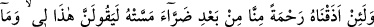

RABBİNİN
HER ŞEYE ŞÂHİD OLMASI,
YETMEZ Mİ?
50. Andolsun ki, kendisine dokunan bir zarardan sonra biz ona bir rahmet
tattırırsak: Bu, benim hakkımdır, kıyâmetin kopacağını sanmıyorum, Rabbime
döndürülmüş olsam bile muhakkak O’nun katında benim için daha güzel şeyler
vardır, der. Biz, inkâr edenlere yaptıklarını mutlaka haber vereceğiz ve muhakkak
onlara ağır azaptan tattıracağız.
51. İnsana bir nimet verdiğimiz zaman (bizden) yüz çevirir ve yan çizer. Fakat
ona bir şer dokunduğu zaman da yalvarıp durur.
52. De ki: Ne dersiniz, eğer o (Kur’an), Allah tarafından ise siz de onu inkâr
etmişseniz o zaman (haktan) uzak bir ayrılığa düşenden daha sapık kim vardır?
53. İnsanlara ufuklarda ve kendi nefislerinde âyetlerimizi göstereceğiz ki onun
(Kur’an’ın) gerçek olduğu, onlara iyice belli olsun. Rabbinin her şeye şâhid olması,
yetmez mi?
54. Dikkat edin; onlar, Rablerine kavuşma konusunda şüphe içindedirler. Bilesiniz
ki O, her şeyi (ilmiyle) kuşatmıştır.
“Andolsun ki, kendisine dokunan bir zarardan”, hastalık yahut fakirlikten “sonra biz
ona bir rahmet” sağlık ve zenginlik “tattırırsak: Bu” hayır “benim hakkımdır.” Çünkü
ben fazîlet ve iyilik sahibi biriyim, bunu hak ettim. “Kıyâmetin kopacağını”, geleceğini
“sanmıyorum;” kıyâmet kopsa da “Rabbime döndürülmüş olsam bile muhakkak O’nun